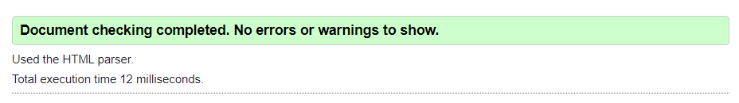
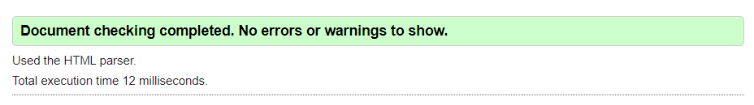

| Vecka | På lektionen | Utanför lektionen |
|---|---|---|
| 4 | Börjar greppa arbetet. | Börjar greppa arbetet. |
| 5 | Börja med att tänka över arbetet och lösa vad sidan faktiskt skall handla om. Tänka ut en generell idé kring hemsidan och tankar om dess utseende. Börja arbeta på html-strukturen. | Eftersom jag vid det förra arbetet hade stora problem med att få till en sticky nav-bar, pga. att jag hade annan kod som krånglade till det väldigt, har jag bestämt mig för att börja med nav-baren, och sedan strukturera delsidornas exklusiva innehåll efteråt. Så, för att hålla det kort, arbeta med nav-baren (både css och html). Planen är att nav-baren ska vara responsiv till skärmbreden, och finnas i tre olika lägen: Mobil, Tablet, och dator. Till mobil kommer den vara näst intill appliknande, och vara låst längst ned. Den kommer också endast bestå av symboler, med text högst upp för att förklara mer tydligt vart man är någonstans. Jag gör detta eftersom de absolut största apparna gör på just detta sättet, och de flesta kommer troligen att känna igen sig från dem. Till tablet kommer den också vara låst längst ned, men inte bara bestå av symboler. Symbolerna kommer också vara större och loggan för hemsidan kommer vara befintlig (eller iallafall mer tydlig, beroende på om jag har den i i mobil-läge). När det kommer till dator-läget kommer nav-baren inte vara låst, utan vara placerad lite över mitten av skärmen när du befinner dig högst upp på hemsidan. Efter detta kommer nav-baren vara sticky, vilket innebär att när nav-baren är placerad högst upp på hemsidan, kommer den låsas där. Kommer antingen ha både text och symboler, eller endast text. Loggan kommer också befinna sig i mitten av skärmen. |
| 6 | Får klart nav-baren (css och html). | Arbeta med html-strukturen. |
| 7 | Få klart html-strukturen. | Arbeta med css. |
| 8 | Arbeta med css. | Arbeta med css. |
| 9 | Få klart css. | Finslipa både sidan såväl som denna planering. |
| 10 | Finslipa både sidan såväl som denna planering. | Finslipa både sidan såväl som denna planering. |
| 11 | Finslipa både sidan såväl som denna planering. | Finslipa både sidan såväl som denna planering. |
| 12 | Göra de absolut sista modifaktionerna och hoppas på det bästa. | Be att allting gick vägen. |
 Den är lite mer emot när jag använder lite andra bakgrundsfärger / bilder, men eftersom detta används så sparsamt sticker de ut
tillräckligt från resten av hemsidan för att fortfarande synas.
Därefter testade jag i Internet Explorer, där allt fungerade perfekt och på samma sätt som i Google Chrome.
Bilderna visades, funktionerna fungerade och texten var densamma som i Chrome.
Jag använde mig också av flera olika valideringstjänster för att validera min html och css kod. Först validerades CSS, varav 3st värdefel varav två var av font-weight och den tredje text-transform rättades till.
Den rättade till att man inte kunde ha font weight 1000 eller 500px, eller text-transform: upper-case. Detta rättades enkelt till, och är nu borta från min css kod.
bild på CSS-valideringen:
Jag kollade därefter igenom mina HTML-koder. Jag började med min about.html, då den helt enkelt var överest. Jag trodde innan att jag inte skulle få några fel då koden enligt mig fungerade, men så var inte fallet.
Istället visade det sig att det finns några regler jag inte visste om att man skulle följa, iallafall enligt detta valideringsverktyget (W3). Saker såsom att ha två olika classer på en och samma sak, ha samma ID på olika saker,
och att inte ha ett mellanrum mellan attributes är några av dem viktigaste sakerna som dök upp. Dessa fel rättades till efter valideringen. Jag kollade därefter art.html, contact.html, covers.html, index.html, purchase.html, templates.html
och i princip samma fel kom upp. Dessa fel rättades till efter valideringen.
Bild på HTML-valideringen (I alfabetisk ordning (about.html, art.html, contact.html, covers.html, index.html, purchase.html och templates.html).):

Den är lite mer emot när jag använder lite andra bakgrundsfärger / bilder, men eftersom detta används så sparsamt sticker de ut
tillräckligt från resten av hemsidan för att fortfarande synas.
Därefter testade jag i Internet Explorer, där allt fungerade perfekt och på samma sätt som i Google Chrome.
Bilderna visades, funktionerna fungerade och texten var densamma som i Chrome.
Jag använde mig också av flera olika valideringstjänster för att validera min html och css kod. Först validerades CSS, varav 3st värdefel varav två var av font-weight och den tredje text-transform rättades till.
Den rättade till att man inte kunde ha font weight 1000 eller 500px, eller text-transform: upper-case. Detta rättades enkelt till, och är nu borta från min css kod.
bild på CSS-valideringen:
Jag kollade därefter igenom mina HTML-koder. Jag började med min about.html, då den helt enkelt var överest. Jag trodde innan att jag inte skulle få några fel då koden enligt mig fungerade, men så var inte fallet.
Istället visade det sig att det finns några regler jag inte visste om att man skulle följa, iallafall enligt detta valideringsverktyget (W3). Saker såsom att ha två olika classer på en och samma sak, ha samma ID på olika saker,
och att inte ha ett mellanrum mellan attributes är några av dem viktigaste sakerna som dök upp. Dessa fel rättades till efter valideringen. Jag kollade därefter art.html, contact.html, covers.html, index.html, purchase.html, templates.html
och i princip samma fel kom upp. Dessa fel rättades till efter valideringen.
Bild på HTML-valideringen (I alfabetisk ordning (about.html, art.html, contact.html, covers.html, index.html, purchase.html och templates.html).):
